This article discusses the idea that ancient megalithic locations and sites have a non-physical component; a designed energy field for one reason or the other. And it’s an interesting idea and concept. After all, it shakes the entire foundation of the idea of “cave men” being dumb, brute savages. Which is the Newtonian, and Victorian narrative. And instead gives us a picture of an astonishing understanding of things that are far in advance of what their physical accomplishments might say otherwise.
But before we jump into the meat of this article, let’s talk a little about MM here. Because [1] it’s what I want to talk about, and [2] it affects the writing of this article. As this article will be the first article written on this new computer.
I got a new computer! Woo Woo!
Yeah. I have been dealing with a five year old ASUS that ran on Windows 8. It was a budget model, on sale when I bought it. But it met my needs. But then Windows automatically installed Windows 10 on it. And then wouldn’t stop. No matter what switches and commands that I specified.
Windows 10 kept on adding bloatware, and hogging up more and more of my computer resources until it reached a point of saturation. I simply could not run a 4GB ram computer with an OS that required 4 GB just to operate. Jeeze!
Indeed, it was a pain in the ass. Not to mention the periodic (every two day) updates, and so forth.
My solution was to run an Unix based system, and I was all “gung-ho” to do so too. However, the wife ordered me to get a new computer. And guys, you know who is the boss. Right? And so I did.
And I started a looking.
I went into the local stores and found off the shelf computers from 2,000 RMB to 8,000 RMB. (Roughly $350 USD to $1230 USD.) I was just about ready to snag one when I realized that everything was in Chinese, and while I can get by on Chinese, I wanted a wholly English language system. It’s a personal preference, don’t you know.
Enter Amazon
So I figured that I would buy a wholly American computer (made in China obviously) but with American software, American duties, American taxation, and American systems including American spyware.
So I went to the website Amazon.com. I hear that it is a pretty popular website in the States today, and well known. But I cannot verify that. What I can verify is that I went there and found many computers that met my needs, but none were actually available. They were on “waiting lists”. Jeeze!
Prices appeared (in the basic capability range) to be in the $1500 to $2300 USD arena with all the taxes and duties taken into account.
Enter an IT professional
Recognizing my consternation, my wife laid down the law and told me what to do.
So we contacted my IT guy (an employee of mine) and he made up a custom computer laptop for me. He used Windows 10 as that is what I am used to, but used a Chinese modified version. (A scalpel was taken to the NSA backdoors and reporting systems, as well as updates. It’s a “safe” and inert version for Chinese users.) Granted, it’s still bloatware, and a pain in the ass sometimes, but it gets me where I want to go. And on this newer and faster system, it’s like a hot knife through butter.
My old computer had 2 GB ram. Windows 10 needs 4 GB ram just to operate. This new joy used 32 GB ram and the difference is astounding.
My old PC had 100GB storage in SSD HD. And I was told that “everyone” used cloud storage “these days”.
Bullshit.
I couldn’t get anything done without contortions and manipulations.
My new PC has an internal 500GB SSD storage and an outside HD of 2TB SSD storage. Holly Hell!
Connection speeds are off the charts. Typing is easy as all get out, and the graphics are astounding. This system has amazing graphics. Maybe I’ll install a few simulators that I have been Jonesing about. Like the X-Plane 11.
Or Flyinside…
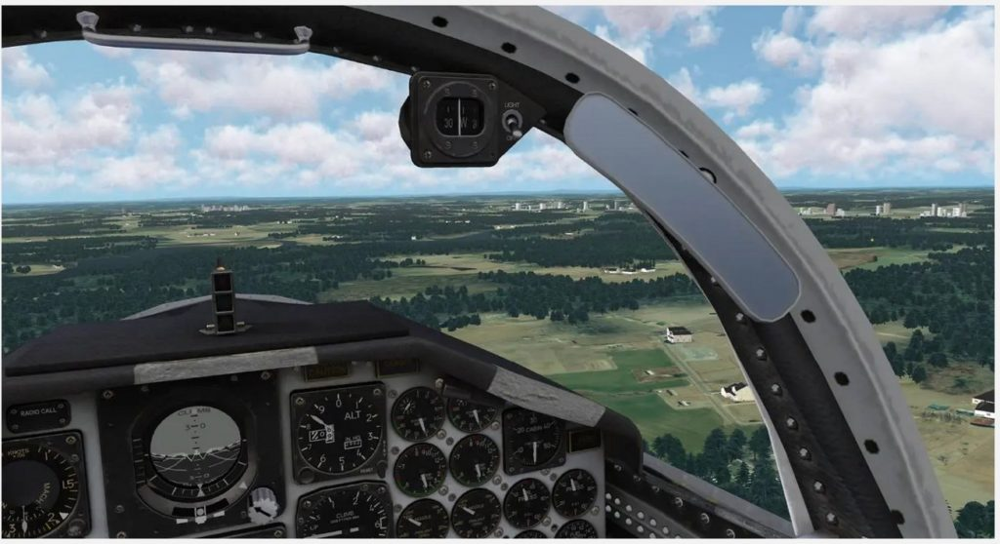
Anyways, my IT guy took an off the shelf Shaomi, modified it with Samsung memory and local Chinese graphics cards. The price is much cheaper than what you would get in the ‘States. For certain and meets my needs.
BTW, I have received tremendous support from MM readers who have substantial skill in IT matters. They helped me keep typing while my old computer burped and sighed as it got older. Now you would think that I wouldn't need this help as I had an IT guy nearby. But I didn't. I have a periodic IT guy that jets around all over Asia, and helps me remotely as time permits. He made up this computer remotely to my specifications and then shipped it to me via the mail. People! You make do with what is available to you. And never forget the network of friends that you have. Here a BIG call out to those who have helped me in the past, and the movies, and the step by step instructions that they sent me. It keep MM alive. Big THANK YOU!
I do not play games that often
I do love a good game, and the computer games are awesome, but this is a work computer. Not a gaming computer. It has a lighted keyboard, and the ram, but not the graphics card need to run the modern intensity games. But this computer can run most of the conventional games of interest, and that’s good enough for me.
Though X-plane 11 does look awfully tasty…
My biggest sigh of relief is that the MS Windows will not be trying to jam a watermelon down into a pin hole any longer. I can actually get some work down without MS shutting down the system for lack of resources every forty minutes or so.
Harmony OS
Oh, and Harmony OS is not yet ready for PC operation. Which is a great disappointment to me. But you deal with what you are familiar with and what you work with. And that is that.
Did I cop out?
Nope. If you need to dig a ditch you grab what ever shovel is available and you use it. If you have a choice, you use the best one available to you.
I wish that I could tell you that I could walk into a nearby store with a Harmony OS or UNIX computer off the shelf with the latest and greatest hardware, but that is not possible at this time. And so you make do with what you have available to you.
All in all…
All in all, a computer is just a tool. It’s like a car, a blender, a lawnmower or a razor. You use it as you see fit and if you use it often enough, you will want to use the best quality tool available and treat it with care and dignity.
And now to the article…
Is there MORE to the eye when you look at these 10,000 year old piles of rock and stone? Are there magnetic alignments, electrical currents, eddy currents and forces that geographically exist, but is not discernible to those without the necessary equipment?
And if so…
Then 10,000 years ago either
Ancient humans had the ability to naturally sense these magnetic or electromagnetic lines of force.
Or,
They had equipment that could.
They’re Alive! Megalithic Sites Are More than Just Stone
By Freddy Silva
It doesn’t take much to stimulate the human body’s electro-magnetic circuitry, in fact a small change in the local environment is enough to create a change in awareness.
People who visit ancient temples and megalithic sites often describe such a sensation. The standard explanation is that such feelings are nothing more than a ‘wow’ factor: the result of visual stimuli from the overwhelming impression generated by megalithic constructions such as stone circles, ancient temples and pyramids.
But the cumulative evidence proves otherwise: that megaliths and other ancient sacred places are actually attracting, storing, even generating their own energy field, creating the kind of environment where one can enter an altered state of consciousness.
Generating Energy Fields
In 1983 a comprehensive study was undertaken by engineer Charles Brooker to locate magnetism in sacred sites. The test subject was the Rollright stone circle in England. A magnetometer survey of the site revealed how a band of magnetic force is attracted into the stone circle through a narrow gap of stones that act as the entrance. The band then spirals towards the center of the circle as though descending down a rabbit hole.
Two of the circle’s western stones were also found to pulsate with concentric rings of alternating current, resembling ripples in a pond.
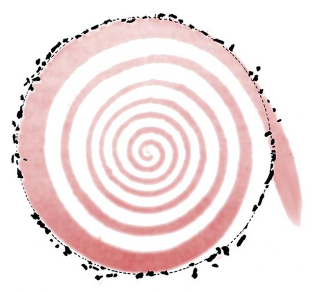
The analysis led Brooker to state how,
“the average intensity of the [geomagnetic] field within the circle was significantly lower than that measured outside, as if the stones acted as a shield.”
Such discoveries help us decipher what the ancients were up to when they built megalithic structures. At the Temple of Edfu in Egypt there is a wall featuring what amounts to a recipe for establishing a space that differs energetically from its surrounding landscape — a temple. The instructions describe how certain creator gods first established a mound and ‘pierced a snake’ to the spot, whereupon a special force of nature impregnated the mound, which led to the construction of the physical temple.
The symbol of the serpent has always been a culturally shared metaphor of the earth’s meandering lines of force, what scientists refer to as telluric currents.
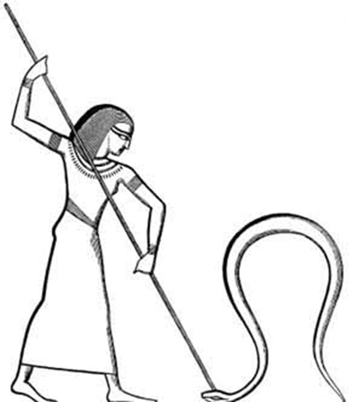
Controlling the Laws of Nature
It seems ancient architects had a fine degree of control of the laws of nature, because a recent study of energy fields in and around Avebury, the world’s largest stone circle, shows how its megaliths are designed to attract a ground current into the site.
Electrodes planted at Avebury reveal how its circular ditch breaks the transmission of telluric ground current and conducts electricity into the ditch, in effect concentrating energy and releasing it at the entrance to the site, sometimes at double the rate of the surrounding land.
Magnetic readings at Avebury die away at night to a far greater level than can be accounted for under natural circumstances. They charge back at sunrise, with the ground telluric current from the surrounding land attracted to the henge just as magnetic fluctuations of the site reach their maximum.
Studies conducted by the late physicist John Burke also discovered how the stones of Avebury are deliberately placed and aligned so as to focus electro-magnetic currents to flow in a premeditated direction using an identical principle to modern atomic particle colliders, in which airborne ions are steered in one direction.
The effect of sacred sites behaving like concentrators of electromagnetic energy is enhanced by the choice of stone. Often moved across enormous distance, the stone used in megalithic sites contains substantial amounts of magnetite. The combination makes temples behave like weak, albeit huge, magnets.
Spiritual Technology
This has a profound influence on the human body, particularly the dissolved iron that flows in blood vessels, not to mention the millions of particles of magnetite floating inside the skull, and the pineal gland, which itself is highly sensitive to geomagnetic fields, and whose stimulation begins the production of chemicals such as pinolene and serotonin, which in turn leads to the creation of the hallucinogen DMT. In an environment where geomagnetic field intensity is decreased, people are known to experience psychic and shamanic states.
An exhaustive investigation into the Carnac region of France, where some 80,000 megaliths are concentrated, reveals a similar spiritual technology at work. At first the leading researcher, electrical engineer Pierre Mereux, was skeptical that megalithic sites possessed any special powers.
Mereux’s study of Carnac shows how its dolmens amplify and release telluric energy throughout the day, with the strongest readings occurring at dawn. The voltage and magnetic variations are related, and follow a phenomenon known as electric induction . According to Mereux,
“The dolmen behaves as a coil or solenoid, in which currents are induced, provoked by the variations, weaker or stronger, of the surrounding magnetic field. But these phenomena are not produced with any intensity unless the dolmen is constructed with crystalline rocks rich in quartz, such as granite.”
His readings of menhirs reveal an energy that pulsates at regular intervals at the base, positively-and negatively-charged, up to thirty-six feet from these upright monoliths, some of which still show carvings of serpents.
Extreme pulsations recycle approximately every 70 minutes, showing that the menhirs charge and discharge regularly.
Mereux also noticed how the voltage of standing stones in the Grand Ménec alignment diminished the farther away they lay from the stone circle, which itself behaved as a kind of condenser or concentrator of energy.
The composition of the stones and their ability to conduct energy was not lost on Mereux and others. Being very high in quartz, the specially chosen rocks are piezoelectric, which is to say they generate electricity when compressed or subjected to vibrations.
The megaliths of Carnac, positioned as they are upon thirty-one fractures of the most active earthquake zone in France, are in a constant state of vibration, making the stones electromagnetically active.
It demonstrates that the menhirs were not planted on this location by chance, particularly as they were transported from 60 miles (97 km) away, because their presence and orientation is in direct relationship to terrestrial magnetism.
Sacred Sites and Magnetic Portals
Ancient Mysteries traditions around the world share one peculiar aspect: they maintain how certain places on the face of the Earth possess a higher concentration of power than others.
These sites, named “spots of the fawn” by the Hopi, eventually became the foundation for many sacred sites and temple structures we see today. What is interesting is that each culture maintains that these special places are connected with the heavens by a hollow tube or reed, and by this umbilical connection the soul is capable of engaging with the Otherworld during ritual. However, it also allows a conduit for the spirit world to enter this physical domain.
In 2008 NASA may have unwittingly proved this observation to be true when it published details of an investigation into FTEs, or flux transfer events, in which this organization describes how the Earth is linked to the Sun by a network of magnetic portals which open every eight minutes.
Such discoveries help to validate, in the scientific eye, the long-held belief by sensitives and dowsers since the recording of history that megalithic sites and ancient temples are places set aside from the normal world, where a person can connect with locations far beyond this planetary sphere.
Certainly the ancient Egyptian priests regarded the temple as far more than a conglomerate of dead stones. Every dawn they awakened each room with orations, treating the temple as a living organism that sleeps at night and awakens at dawn.
Material based on the author's book The Divine Blueprint: Temples, power places, and the global plan to shape the human soul , Invisible Temple, 2012. Available at invisibletemple.com
Pretty interesting but wait…
…there’s more.
Maybe others have “brushed up against these discoveries” but do not realize what they have found…
Exploring the Megaliths of Magnetic Rock – Guidepost for Ancient Man?
By Charbruns
Near Copper Harbor, Michigan, USA, at the northern tip of the Keewenaw Peninsula, a large and long protrusion of rock emerges far up the hillside in deep forest.
Many petroglyphs cover this rock. It sits on the ancient shoreline of Lake Duluth. One figure is a large boat rigged with a square sail. Most viewers who trek that far into the forest proclaim it a Viking boat. Other carvings on this stone called ‘Picture Rock’ have recently been defaced as the location becomes well known and the public gains greater access.
A dolmen, a large cap stone supported by three shim stones holding it aloft, is located on the Kelso River out of Sawbill Landing, Minnesota, within the Boundary Waters Canoe Area Wilderness (BWCA) in a national forest. Canada considers these to be lithic works created by the Neolithic cultures long before recorded history. Many others have been found on this continent and around the world, suggesting they are guideposts for ancient man.
lithic By definition, Lithic means “of the nature of or relating to stone.” Strong and formidable, stone has laid the foundation for infrastructure.
In ancient times, water levels were higher from melting glaciers. The surface of the earth was still pressed down from the Ice Ages and had not begun rebounding with the removal of all that ice.
If ancient boats did traverse the Laurentian Divide (a raised area across North America dividing the direction of water flow) between the watersheds, this spot is a likely possibility. Several times I have trekked to Magnetic Rock on the border trail (prominent on the north side atop the Laurentian Divide) between Magnetic Lake and the Gunflint Trail. It was only after the Ham Lake forest fire in 2007 that the rock ‘reappeared’.
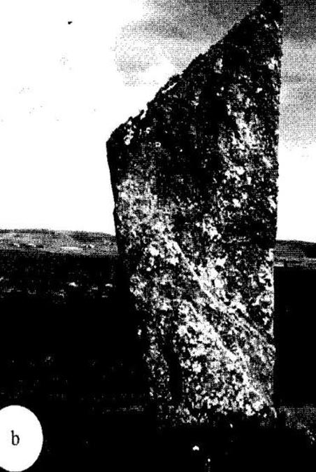
In an article by Wakefield and de Jong on megaliths in the Orkney Islands of Scotland, a standing menhir closely resembles the rock in Minnesota.
Dr. de Jong’s interpretation was sailing data is encrypted in the Orkney stone, explaining the unique shape and lines of the stone on our northern border.
The stone I was sitting on in photo below is possibly a shim placed to hold the stone erect. The rock was raised, by persons unknown, to mark a water passage through the Laurentian Divide. At that date, higher water levels would have created a channel. The menhir sits on the highest elevation, according to USGS maps. The swampy valley below is the headwaters of the Cross River.
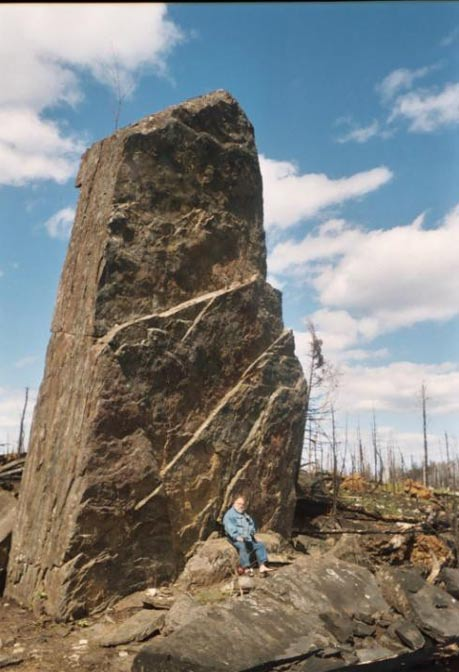
If this area was used by man in the distant past, supporting evidence was crucial. Further exploration produced indications of the presence of prehistoric man.
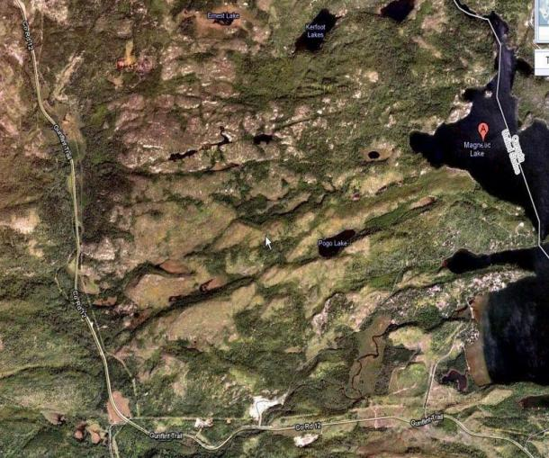
Magnetic Rock is the same high iron content igneous rock that makes up the Laurentian Divide. A waterhole near the Gunflint Trail attracted our attention due to the right angles and cut rocks surrounding it. Sitting next to the watercourse was a stone cube. Two other cubes were subsequently located, the smallest on the heights east of the river.
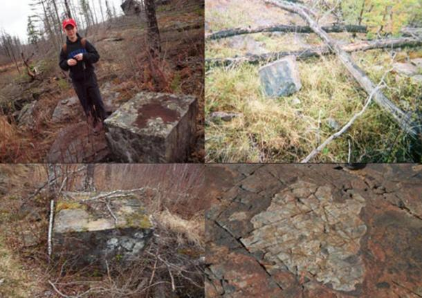
The rock did fracture at right angles.
The lower right image might have been a demonstration of an ancient mining technique, wherein intense fire is doused with water to fracture the rock. Today First Nation, or Native American peoples pour boiling water, during winter, into cracks in the Souix Quartzite to freeze and break apart the rocks, to aid mining of Catlinite, a reddish-brown rock in Pipestone, Minnesota.
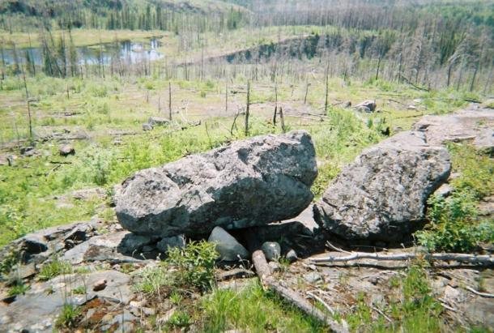
On the west edge of this cliff, on a short ledge four feet below the summit, was a cache.
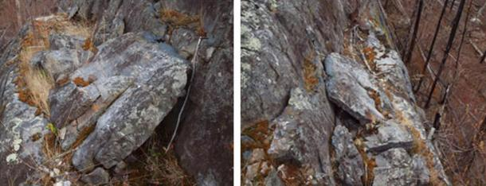
It is well designed and skillfully made.
The right image shows where the cap stone was taken from the cliff, then moved horizontally along the ledge through human effort. While the chamber is empty today, detritus has accumulated on the ledge, awaiting qualified investigation.
Across flowing water to the east, on a ledge below steep cliffs, sits a large boulder calling attention to itself by shape and position in the landscape.
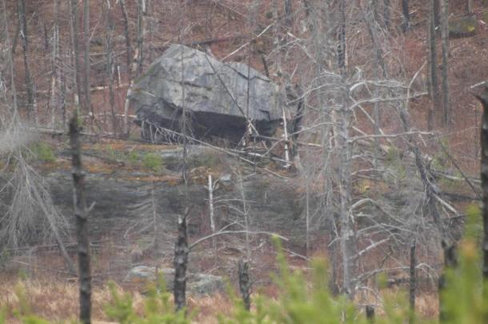
This rock, upon closer examination by Diane Bruns, showed chisel marks and shaping.
While not a classic dolmen, I believe this qualifies as a piece of Neolithic rock art.
The placement, shape, and expression speak too much of the monuments left by man in this time, contemporary with Stonehenge in Britain and the pyramids of Egypt.
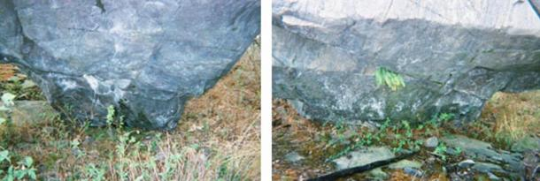
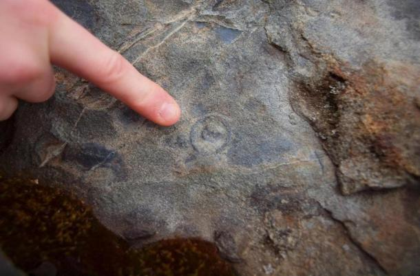
Kelso dolmen and Magnetic Rock have been shown over the internet recently on YouTube, gaining awareness.
The climb from the Gunflint Trail to Magnetic Rock was improved last year by the Minnesota Conservation Corp.
It is important to evaluate and preserve these unique sites for posterity. While the Ham Lake forest fire brought this menhir back out of the forest, the heat of the fire and exposure to elements has taken a toll.
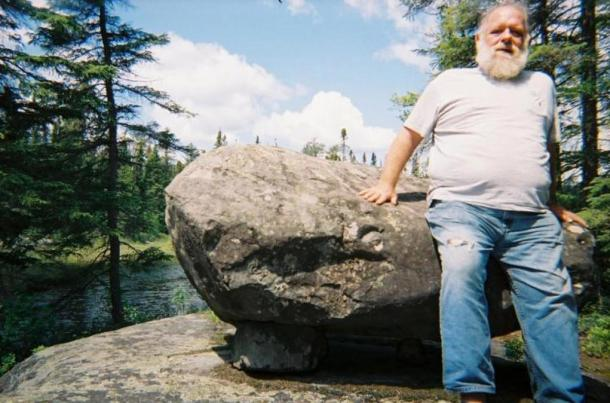
A demand for copper clearly existed. Several locations around the prehistoric world were known for stepping up to metallurgy.
It is obvious there must have been a copper period before the Bronze Age could exist. A defining aspect of human culture is trade, and the success of many early groups was rated by the distance their resources were distributed, or the cultural practices they followed.
Float copper would have been available for easy transportation and man has always practiced war and trade, both being methods for transferring wealth.
Our technology offers new data and insights into cultures invisible to written history. Questioning and studying the aquaculture of Machu Picchu is astounding urban designers today. It is only in the last century we understand what the stone masons were doing building the Greek Parthenon.
There are levels of sophistication we are not aware of at this time. These odd spots in the forest must be protected, and require qualified examination and evaluation with an open mind. New paradigms are arising in understanding the activities of Neolithic man.
Some Conclusions
Well, let me suggest some thoughts.
- Ancient man at 10,000 years ago had understanding and abilities regarding the ability to sense non-physical actions, and energy better than what we modern humans have.
- The mining of metals, notably copper occurred during this time with implies the utilization of metal tools.
- How the ancient peoples used their skills to both sense these fields, and fashion metals tools indicates early civilizations of a far greater capability and extraordinary utility than what has been assigned to them.
I like to believe that by studying their actual abilities at this time, we should be able to decipher more about who they were and what their societies were at that remote time in the past.
And now it’s time to go and eat…
Some of my thoughts on food (while I am at it). And why not? Seriously. Why not? When I go on adventures, meet attractive and interesting people, women or animals, or just enjoy a beautiful day, I think about food.
Like a nice steak. Thick, heavy with nice juices.
I must tell you that they make real delicious perfects steaks in two places on this planet. The places are Brazil and Zambia. And you have no idea how well taken cared for you are and with delicious thick juicy steaks in the lands of Zambia and Brazil.
Typical Lusaka, Zambia steak.. Eggs, ham, sausages, french fries, mushrooms, fried tomatoes and icy cold beer. My goodness!
Now, for my comment of the day.
Instead of buying five "Fast Food" package meals for lunch all week, how about bagging it with some home made soups and sandwiches, and then spend Friday night eating a delicious steak like the one pictured above. The same amount of money will be used, it's just that the quality of what you will eat will change substantially.
But that’s just my opinion.
My belief is that you move away from five “fast food” fill-up dash-and-burp meals, and replace them with home-made fresh simple but filling meals. Then spend the savings on a deluxe special meal at the end of the week. Depending on your situation and the budget you can decide on restaurants or on cooking at home.
Oh, and don’t forget your friends, and your little guys. It’s a time to go out and celebrate just for the heck of it. You DO NOT NEED an excuse. You just make some phone calls and tell those folk to show up.
If you all are poor…
…make it “pot luck” and everyone brings a home-made dish. Just organize it. Suzy and Jake brings a salad. Tom and Roy bring a bacon / cauliflower dish. Daniel brings some rolls, breads. James brings a case of beer. Tommy brings some potato chips. Etc. Etc. Etc.
What are you waiting for?
An invitation?
And while I am at it, here’s a Zambian Africa version of steak and mushroom pizza. I tell you what, you won’t find such a concentration of mushrooms and steak on a pizza anywhere else. You just won’t.
Maybe you can make home-made steak and mushroom pizzas as the theme. Provide lots and lots of beverages, and just invite friends to come over, eat their fill, drink and chat with you. I’ll tell you that if one of my friends told me that they are experimenting making steak pizzas and wants me to come over, smunch, jam (with some music) and watch a movie later on, I’d be the first one at their door-step.
What will it do?
Nothing obviously. Stop thinking in terms of “profit motives”. Instead of thinking about changing your lifestyle into something better. Making it a more adventuresome and exciting fun life. A life, mind you, that you share with others.
But, you do know, that it will set things in motion that will manifest later on. Just do it. Trust in the wisdom of MM.
Now…
Talking about themes…
You know, if I lived in the UK, I would take this moment to go visit some of these most interesting megalithic sites that all throughout the region. Maybe not the most famous ones, but the “out of the way” places. Then take some pictures, get a “feeling” for the area. Who knows, maybe I could experience some feelings of the Leigh Lines, or whatever they are called.
Then…
Check out the local pub(s). Try the local meal specialties (if any). Chat it up with the old bar flies there, the townies, and all the rest, and maybe make some friends. I’d make a day of it. But that’s just me.
Of course, for me, a beef pie would be awesome. Just awesome, while everyone else might yawn and look the other way. As if (to say) “tourist”.
But really, there’s so much to see and explore in this world.
I well remember a fine meat pie lady who well investigated a OOPART in the UK. Such an adventure, and even though no direct discoveries occurred, the day trip was a wonderful adventure with many, many good times. Memories. Companionship.
Oh, and she did discover a curious abandoned construction that somehow ended right on top of what used to be the ruins. What a coincidence.
And you all know about coincidences, eh?
Anyways, the fact that you go out of your house, and you go forth and explore, and that you go and make friends. Oh, Lordy! It’s so awesome!
If I was in Indiana, Pennsylvania or Ohio, I would tromp out to the local historical parks, and museums and see if I could sense of “feel” any magnetic or patterns around the structures there. I probably couldn’t, but the exercise in trying to discover the effects would actually be awesome. I think.
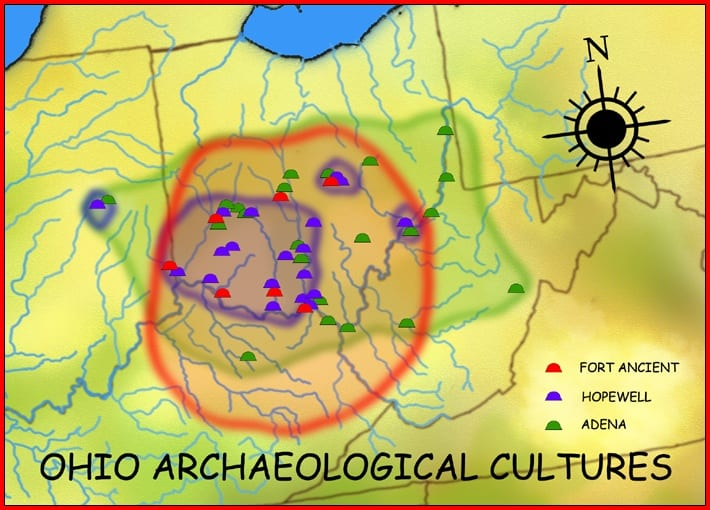
You never know what life will present to you.
I once had an interview for a job in Deland, Florida.
What a beautiful place. And interesting work on sonar buoys. But they low-balled me on salary. I mean really, seriously offered me a salary just above minimum wage. WTF?
But I told them that I would consider it.
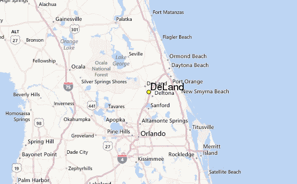
And the wife and I (my first wife) spent a week trying to figure out if that place was good for us. And it was certainly beautiful.
They had fern farms. That’s right, this was were they grew ferns. They has these ferns under the trees that lay under an canopy and it was really deep, dark, lush and calm. Spanish moss hung from the trees.
So nice.
Alas, I did not accept the job. Not that I didn’t want to accept the low salary, but we physically couldn’t afford it. The rents were out of our reach at that salary. Which is probably why the turnover was so high at the company. Sigh.
But it was in the 1990’s. It was at the time when profits over all drove all companies throughout the USA.
But, what I want to tell you all is that next to the area where we stayed was a horse race track. And we visited it during the day to have lunch.
Very relaxing.
The riders were not racing. Just going through their paces, and we got a reasonably inexpensive lunch on an off moment in time.
But as we got back to our rental car, we heard meowing.
And there near the fence was around 16 of the cutest little kittens you ever did see. (Sixteen kittens. So many.) They were all white. Every single one of them.
Perhaps two or three white cats gave birth to all these kittens, and they were so friendly and came up to us. I just wanted to take all of them home.
But I didn’t.
I should have taken the event as a SIGN.
“Signs”. They do occur.
Signs are real things. But I didn’t. I was too focused on the material aspects of a functional life. I shouldn’t have been, but I did.
This was just a few months after my only ever white kitten; snowflaker, died.
Instead I took another job. It fizzled and I left it. But maybe I should have listened to the signs…
Maybe I should have listened to the signs…
Maybe I should have listened to the signs…
Maybe I should have listened to the signs…
…but I would never have been exposed to the signs if I did not venture forth and get out of the environment that I was in. Oh, so many MM readers are still in their boxes. It’s tough to venture outward, but when you do, things happen.
THINGS HAPPEN.
Things happen.
OK. So what am I trying to say. Well, go out of your “comfort zone” and try to explore the world nearby. You might be surprised at how interesting it is. And if you don’t find it interesting, you might be surprised at all the new experiences you will have.
Even the most bland place has some very interesting stories that are just waiting for YOU to experience.
I well remember living in Kentucky. Bored, my wife and I went for a long ride. Lord knows where we went, but somehow we ended up in the middle of no where. So we pulled up at a lone gas station. There was a glider sofa, on the porch.
We got some ice cream, and spent one hour just rocking on that glider while the world sat frozen in time. It was magical.
I always enjoyed glider sofas. Everyone used to have them. Both of my grandparents had them, and later on my father got a old antique one that he refurbished and fixed up and put on his porch. Most people put cushions or throws on the sofas and set them on their porch.
So nice.
Can you just imagine what it would have been like if we lived in France?
France…
In Scotland?
In Germany?
In Poland?
In Morocco?
In Namibia?
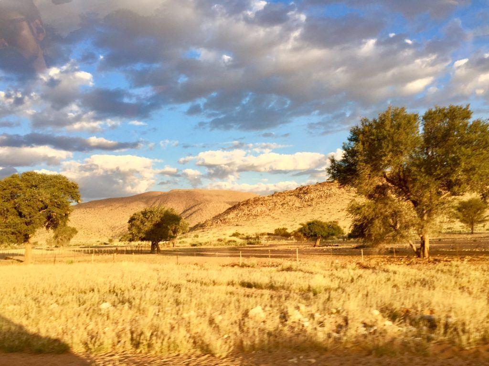
But I lived in Kentucky.
Stop reading about the adventures of others. Use your knowledge and your desire for adventure to experience things on your own.
-Lecture ends.-
Remember, that adventures will surprise you
The thing about going out and going forth doing something new, or something that you don’t often do, is that you will experience some surprises.
I went to visit a 200 year old greenhouse as a day trip when I lived in Massachusetts, and then ended up discovering the best retro diner that I ever sat in.
Or, I once went to visit a butterfly conservatory. It was this enormous network of connected greenhouses just filled with butterflies from all over the world. It was awesome, but what’s more on the way home we pulled off and discovered the largest collection of twine in all of Northern Massachusetts. This crazy old coot spent his entire life collecting twine and made a huge ball of it. They had to make this metal pole building around it to keep it out of the weather.
Who knows what might lurk nearby…
A swimming pool perhaps…
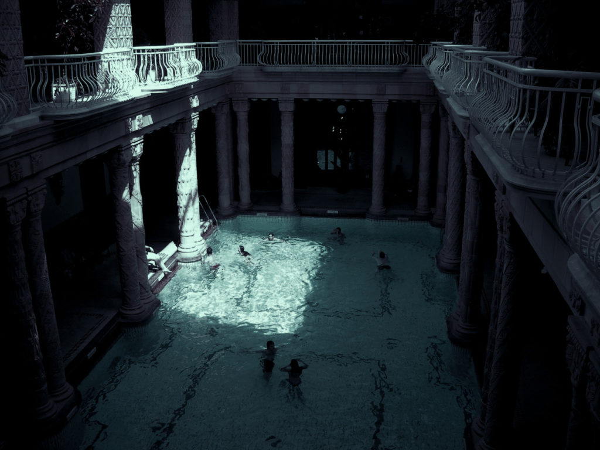
Maybe a chance to tour a Craftsman style home that is being sold and has an “open house”…
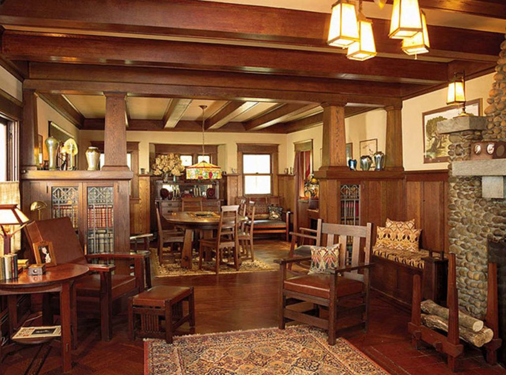
Or maybe just pull into a campground, and spend the night in the tent (that you keep in the trunk of your car just for that occasion.) You never know.
You never know.
Final thoughts
It is hot as hell her in this middle of September 2021 in Zhuhai. Temperatures are routinely in the high 90’s F, or the 34 to 36C, and all with abnormally high humidity. I feel like I am swimming when I walk down the halls.
But it will end.
Sooner or later.
What ever your situation or your condition, please realize that it will change. Change is the natural state of affairs in this region of reality. And do not give up up hope or be frustrated. Good times lie in the future. It is up to you to navigate to that crossroads. I believe in you.
Keep on pushing forward.
And…
…never, ever, ever, ever, give up.
And a final message…
Everyone has ups and downs. Everyone gets happy and gets sad.
But you must know, that sometimes life can “bitch slap you” so hard that you lie broken and collapsed. You are hurt. Not just hurt. You are shattered. Financially, socially, physically, mentally and emotionally. You are just burnt out, and discarded.
I know that there are some frustrated folk out in MM land. I know that things are tough, tight, seemingly hopeless or impossible. And upsetting and sad as all get out. I know this.
Jobs.
Work and money.
Uncertain futures.
Even, just Eating.
Focus on your affirmation campaigns. Be a good person. Eat only delicious and healthy food. Spend time with your friends. Spend time with your animals / pets. Calm your mind through meditation, hemi-sync, and long walks in nature. Be the Rufus.
Leave the world behind you safer, happier, cleaner, and better because YOU happened by.
And you know…
And that is not just some cutesy saying.
The biggest tool in your toolbox is persistence. You don’t just hop from one project to the other. American style like the USA government, or an American hire-and-fire company. No. You be like China and you plan for the long haul. No matter what happens, no matter what storms lash at you, and no matter how worried you are…
And I mean it. I really, really, really do.
It might seem so strange to talk about visiting parks, eating delicious food, and spending time with friends, when it seems like your entire world is collapsing. But it’s not. Focus. Relax as the rest of the world howls. Relax. And focus on your plans and actions.
And never, ever, ever give up.

And remember your little buddies…
They can help you.